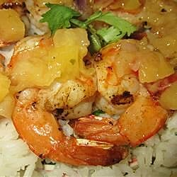

Spicy Grilled Shrimp

They're spicy, and they're shrimpy!
So fast and easy to prepare, these shrimp are destined to be the hit of any barbeque. And, weather not permitting, they work great under the broiler, too.
Ingredients
- 1 large clove garlic
- 1 teaspoon coarse salt
- ½ teaspoon cayenne pepper
- 1 teaspoon paprika
- 2 tablespoons olive oil
- 2 teaspoons lemon juice
- 2 pounds large shrimp, peeled and deveined
- 8 wedges lemon, for garnish
Directions
- Preheat grill for medium heat.
- In a small bowl, crush the garlic with the salt. Mix in cayenne pepper and paprika, and then stir in olive oil and lemon juice to form a paste. In a large bowl, toss shrimp with garlic paste until evenly coated.
- Lightly oil grill grate. Cook shrimp for 2 to 3 minutes per side, or until opaque. Transfer to a serving dish, garnish with lemon wedges, and serve.